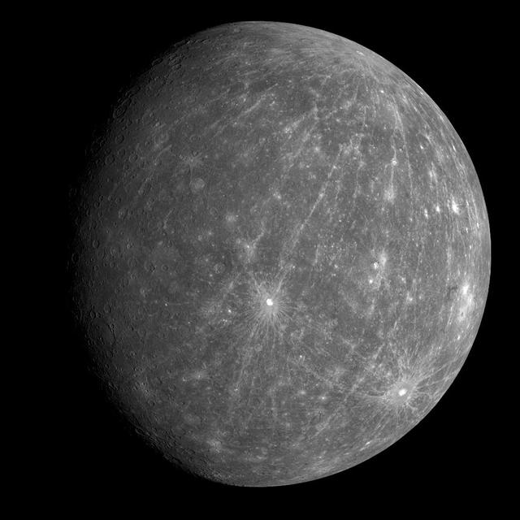

Una selezione ragionata dal mondo dell'astronomia e della ricerca
NOTIZIE · AD ASTRA
Capire ciò che cambia nel cosmo.
Una selezione settimanale, con il tempo necessario per spiegare.
Astronomia, astrofisica e astronautica: raccontiamo scoperte, lanci, astronauti, missioni e tecnologie spaziali, spiegandone il contesto e la rilevanza. Ogni articolo chiarisce che cosa è stato osservato, come lo sappiamo e quali domande restano aperte. La qualità viene prima del numero delle uscite: alcune settimane potranno avere una, due o tre notizie, altre nessuna.
Come scegliamo e raccontiamo le notizie
Partiamo dalle fonti originali e distinguiamo risultati, interpretazioni e ipotesi. Spieghiamo i termini e colleghiamo i concetti al Glossario, alla Biblioteca Federata, alle lezioni e a Galatea. Gli articoli escono dopo revisione e convalida editoriale.
L’archivio 2026 è una raccolta retrospettiva: il mese indica il periodo della notizia, non una pubblicazione già avvenuta su AD ASTRA. Gli approfondimenti generali hanno un percorso separato nei magazine.
In primo piano
Selezione di novembre 2026

Mercurio · immagine d’archivio, non una ripresa dell’arrivo di BepiColombo. NASA/Johns Hopkins University Applied Physics Laboratory/Carnegie Institution of Washington · Fonte e crediti
MISSIONI SPAZIALI
Aggiornamento ESA · 23/11/2026 · Evento del 21 novembre
BepiColombo è in orbita attorno a Mercurio
L’ingresso in orbita attorno a Mercurio è avvenuto il 21 novembre. Il successivo aggiornamento ESA spiega l’anomalia software e l’adattamento delle manovre.
Perché conta: raggiungere un pianeta è una sequenza di operazioni. Spiegare le manovre aiuta a capire obiettivi e stato reale della missione.
I neutrini di ORCA diventano uno strumento per cercare minuscole deviazioni da una simmetria fondamentale. Lo studio non trova evidenze di violazione e pone nuovi vincoli.
Le fotografie delle tre schede mostrano rispettivamente un modulo ORCA, la dimostrazione ASTRA e il gruppo Plasma Observatory; crediti e contesto negli articoli. Ogni articolo contiene una galleria con immagine autentica, illustrazione evocativa e infografica.
Archivio 2026
Gennaio–novembre 2026
Apri un mese e scegli un articolo: quarantaquattro approfondimenti da gennaio a novembre 2026.